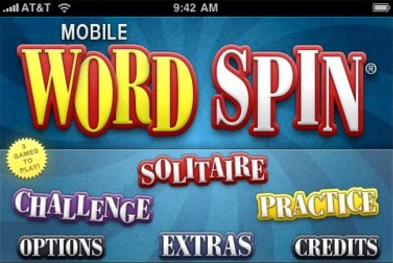
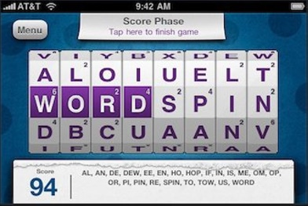
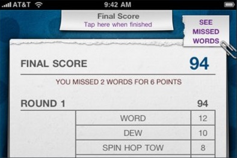
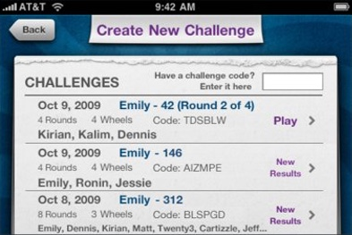

Spin to win!
WORD SPIN®, The enormously popular, award-winning magnetic word game is now available as an iPhone App! Developed from the original game, Mobile WORD SPIN is fun for the whole family, whether at home OR on-the-go!
Eight magnetic wheels. Ten letters a wheel. SPIN, SHUFFLE, SPELL and SCORE away! Tally your points and have fun. This is the quintessence of the award-winning hand-held magnetic word game from Geospace International known as WORD SPIN®.



